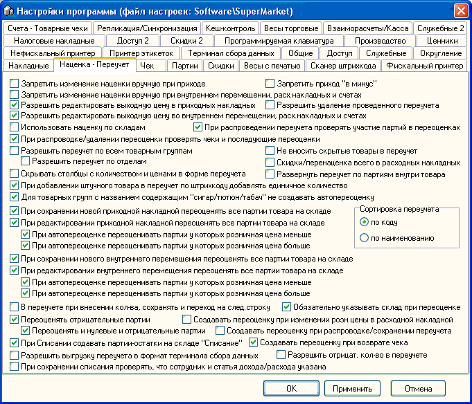

- 
Запретить изменение наценки вручную при приходе и Запретить изменение наценки вручную при внутреннем перемещении - согласно обеих этих опций оператор не может откорректировать наценку, а значит таким образом повлиять на формирование реализационной цены.
Запретить приход в минус - блокирование попытки ввода товара в прих.накладную, у которого цена реализации меньше закупочной.
Разрешить удаление проведенного переучета - эта
опция не сохраняет свое значение, в отличие от остальных опций программы. Если
ее установить, то в текущем сеансе программы станет возможным пользователю с
правами администратора удалить проведенный переучет.  Примечание: при удалении проведенного переучета, данные
откорректированные этим переучетом исправить будет невозможно, т.к. сведения о
прежних остатках будут утеряны.
Примечание: при удалении проведенного переучета, данные
откорректированные этим переучетом исправить будет невозможно, т.к. сведения о
прежних остатках будут утеряны.
Разрешить редактировать выходную (реализационную) цену в приходных и внутренних накладных - эти, соответственно третья и четвертая опции на этой вкладке, позволяют вручную корректировать реализационную цену в накладных, при этом наценка пересчитывается автоматически, независимо от настроек по доступу к наценке.
Разрешить переучет по всем товарным группам - при небольшом ассортименте в маленьком магазине, эта опция позволяет сформировать инвентаризационную ведомость сразу по всем товарным группам.
Разрешить переучет по отделам - делает активными соответствующие контрролы в форме Переучета и отбирает товары по всем товарным группам, занесенным в выбранный отдел.
Использовать наценку по складам - позволяет расценивать товары (автоматически проставлять наценки) по разному в зависимости от того на какой склад идет приход или перемещение. См.дополнительно разделы "Справочник товарных групп" и "Справочник складов".
При распроведении переучета проверять участие партий в переоценках - при установленной опции не даст распровести переучет, если было ценовое движение по одному из товаров, участвующих в нем.
Не вносить скрытые товары в переучет - при заполнении инвентаризационной ведомости в нее не будут заноситься товары с пометкой "скрытый" (см. раздел "Справочник товаров").
Скидки/перенаценка всего в расходных накладных - включает отображение строки меню в сохраненной Расходной накладной, с помощью которой вызывается специальная форма скидок для клиентов.
Скрывать столбцы с количеством и ценами в форме переучета - если переучет будет проводить на компьютере персонал, который не должен видеть текущие остатки и цены на продукцию - включите эту опцию.
Развернуть переучет по партиям внутри товара - в переучет добавляется не по одной записи на каждый товар (с ценами последней партии и количеством суммарным по всем партиям), а по записи на все ненулевые партии каждого товара, что позволяет провести переучет между партиями одного товара и устранить пересорт между ними, если это необходимо. Единственный существенный недостаток - трудоемкость, т.к. получается очень много строк в переучете.
При добавлении штучного товара в переучет по штрихкоду добавлять единичное количество - если переучет проводится с помощью не терминала сбора данных, а ручного сканера на длинном кабеле или радиосканера, то эта опция позволяет ускорить работу персонала, занося при каждом чтении товара единичное количество в ведомость переучета (более подробно об этих и других возможностях переучета смотрите в соответствующем разделе данной справочной системы).
Для товарных групп с названием содержащим "сигар/тютюн/табач" не создавать автопереоценку - т.к. запрещено продавать табачные изделия дороже указанной на каждой пачку МРЦ-цены, то при приходе новой партии с другой ценой старые партии не будут автопереоцениваться, даже если автопереоценка включена.
Сортировка переучета - по коду - по наименованию - для удобства проведения.
Группа настроек по автоматической переоценке в приходной накладной:
При сохранении новой приходной накладной переоценять все партии товара на складе - если партия или партии приходуемого товара, имеющие положительный остаток есть на складе куда приходуется данный товар, то они будут автоматически переоценены, т.е. донаценены или уценены до текущей реализационной цены, в зависимости от двух подчиненных опций и автоматически будет создана ведомость переоценки.
При редактировании ранее созданной приходной накладной переоценять все партии товара на складе - если партия или партии приходуемого товара, имеющие положительный остаток есть на складе куда приходуется редактируемый товар, то они будут автоматически переоценены, т.е. донаценены или уценены до текущей реализационной цены, в зависимости от двух подчиненных опций и автоматически будет создана ведомость переоценки.
Подчиненные опции по автоматической переоценке приходных накладных (могут быть установлены обе, но не может быть, чтобы ни одна не была установлена):
При автопереоценке переоценивать партии у которых розничная цена меньше - в зависимости от двух вышеуказанных опций переоценке в частности будут подлежать лишь те из партий с остатком, у которых розничная цена меньше, чем текущая реализационная которую мы только что внесли в накладную. Так проводится автоматическая донаценка.
При автопереоценке переоценивать партии у которых розничная цена больше - в зависимости от двух вышеуказанных опций переоценке в частности будут подлежать лишь те из партий с остатком, у которых розничная цена больше, чем текущая реализационная которую мы только что внесли в накладную. Так проводится автоматическая уценка.
Если установлены обе подчиненных опции, то цены всех партий приводятся к текущей реализационной цене.
Группа настроек по автоматической переоценке во внутреннем перемещении:
При сохранении нового внутреннего перемещения переоценять все партии товара на складе - если партия или партии перемещаемого товара, имеющие положительный остаток есть на складе куда перемещается данный товар, то они будут автоматически переоценены, т.е. донаценены или уценены до текущей реализационной цены, в зависимости от двух подчиненных опций и автоматически будет создана ведомость переоценки.
При редактировании ранее созданного внутреннего перемещения переоценять все партии товара на складе - если партия или партии перемещаемого товара, имеющие положительный остаток есть на складе куда перемещается редактируемый товар, то они будут автоматически переоценены, т.е. донаценены или уценены до текущей реализационной цены, в зависимости от двух подчиненных опций и автоматически будет создана ведомость переоценки.
Подчиненные опции по автоматической переоценке внутренних перемещений (могут быть установлены обе, но не может быть, чтобы ни одна не была установлена):
При автопереоценке переоценивать партии у которых розничная цена меньше - в зависимости от двух вышеуказанных опций переоценке в частности будут подлежать лишь те из партий с остатком, у которых розничная цена меньше, чем текущая реализационная которую мы только что внесли в накладную. Так проводится автоматическая донаценка.
При автопереоценке переоценивать партии у которых розничная цена больше - в зависимости от двух вышеуказанных опций переоценке в частности будут подлежать лишь те из партий с остатком, у которых розничная цена больше, чем текущая реализационная которую мы только что внесли в накладную. Так проводится автоматическая уценка.
Если установлены обе подчиненных опции, то цены всех партий приводятся к текущей реализационной цене.
В переучете при внесении количества сохранять и переходить на следующую строку - кому как удобно, если не установлено, то фокус остается на текущей строке.
Обязательно указывать склад при переоценке - установленная опция препятствует создать переоценку сразу по нескольким складам.
Переоценять отрицательные партии + Переоценять и нулевые и отрицательные партии - рекомендуем установить обе опции, так более точно будет считаться товарно денежный отчет.
При списании создавать партии-остатки на складе Списание - включенная по умолчанию данная опция позволяет впоследствии сделать дополнительные отчеты по накладным списания продукции, а также другие возможности, рассматриваемые ниже, в разделе Акт списания.
Разрешить выгрузку переучета в формат терминала сбора данных - разрешает создать файл обмена с ТСД без выгрузки на него. В основном используется в нестандарных случаях.
При сохранении списания проверять, что сотрудник и статья дохода/расхода указана - дополнительный контроль за персоналом и возможность последующего анализа (если необходимо).
Создавать переоценку при изменении розничной цены в расходной накладной - при изменении цены отгрузки по сравнению с розн.ценой выбранной партии опция создаст и автпереоценку на продаваемое количество. Необходимо для более точного подстчета товарно-денежного отчета и оценки стоимости суммовых остатков.
Создавать переоценку при распроводке/сохранении переучета - смысл аналогичен предыдущей опции, но относится к переучету.
Создавать переоценку при возврате чека - смысл аналогичен предыдущей опции, но относится к возврату товара из чека.
Разрешить отрицательное количество в переучете -
иногда необходимо для выравнивания остатков или при
пересорте.